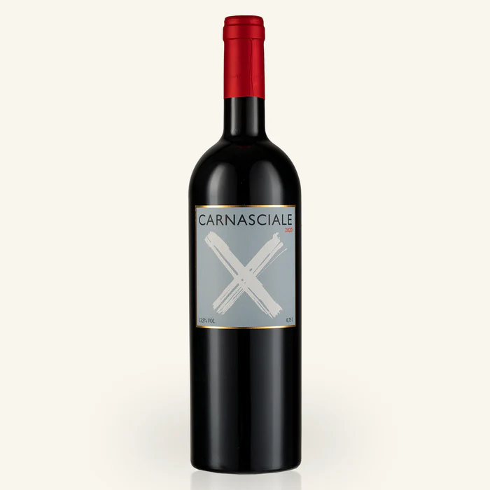
Podere Il Carnasciale – Il Carnasciale 2020
1. Identité
Pays / région : Italie – Toscane
Cépage : Caberlot
Style : élégant, complexe, tanins fins, vin de dégustation avec belle évolution
2. Profil
Podere Il Carnasciale est un domaine toscan culte entièrement dédié au Caberlot, un croisement naturel entre Cabernet Franc et Merlot, cultivé exclusivement sur la propriété. C'est ce qui rend ces vins extrêmement rares et recherchés.
Il Carnasciale est l'expression plus accessible du domaine, combinant intensité, structure et une approche déjà très aboutie dans le millésime 2020 : sombre, épicé et sculpté.
Notes experts : 93/100 Wine Advocate – 17+/20 Jancis Robinson – 93/100 James Suckling – 93/100 Peak Wines
3. Dégustation
Couleur : Ruby quasiment encre
Nez : Cassis, prune et cerise noire, herbes sauvages, graphite, tabac, pointe de poivre
Bouche : Concentré, vertical, savoureux, minéral persistant, finale légèrement saline
4. Infos techniques
Vinification : Fermentation en cuves inox et bois, longue macération, élevage ~18 mois en barriques de chêne français (partiellement neuves)
Classification : Toscana IGT
Garde : 10–15 ans
Carafage : au moins 1h, évolution dans le verre recommandée
Température : 16–18°C
Accords mets : viandes rouges, plats mijotés, cuisine toscane
5. Journal personnel
Date de dégustation : (à compléter)
Occasion : (à compléter)
Avec quoi : (à compléter)
Ressenti global : (à compléter)
Évolution dans le verre : (à compléter)
Note personnelle : (à compléter)
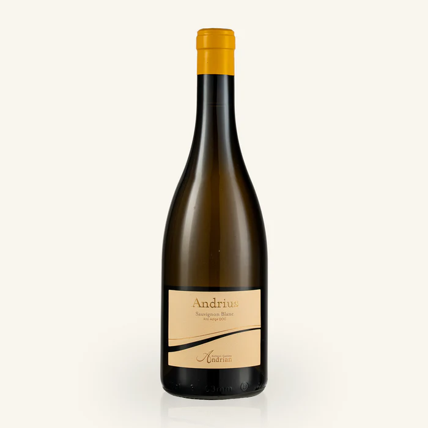
Andrius Sauvignon Blanc Alto Adige DOC
1. Identité
Pays / région : Italie – Alto Adige
Cépage : 60% Pinot Bianco, 30% Chardonnay, 10% Sauvignon Blanc
Style : Tendu, cristallin, aromatique
2. Profil
Ce vin est vraiment l'école Alto Adige : pureté, fraîcheur, précision aromatique, gros travail sur la minéralité. On est dans quelque chose de lumineux et énergique.
La coopérative Cantina Terlano a été fondée en 1893 et est aujourd'hui l'une des références de l'Alto Adige. Leur philosophie repose sur des vins de grande longévité, grâce à une vinification sur lies prolongée.
Notes experts : N/a Wine Advocate – N/a Jancis Robinson – 95/100 James Suckling – 93 Peak Wines
3. Dégustation
Couleur : Paille à reflets verts
Nez : Pomme verte et pêche blanche, avec des nuances de mélisse et menthe, puis des notes persistantes de pêche en bouche
Bouche : Concentrée et fraîche avec un fort extrait, finale longue et saline
4. Infos techniques
Vinification : Vinification sur lies prolongée — souvent plusieurs années — qui développe des arômes secondaires et tertiaires complexes.
Classification : Alto Adige DOC Sauvignon Blanc
Garde : 5–8 ans
Carafage : Non
Température : 9–11°C
Accords mets : ceviche, sashimi, asperges vertes, burrata citronnée, sole meunière, risotto aux herbes, fromage de chèvre frais
5. Journal personnel
Date de dégustation : (à compléter)
Occasion : (à compléter)
Avec quoi : (à compléter)
Ressenti global : (à compléter)
Évolution dans le verre : (à compléter)
Note personnelle : (à compléter)
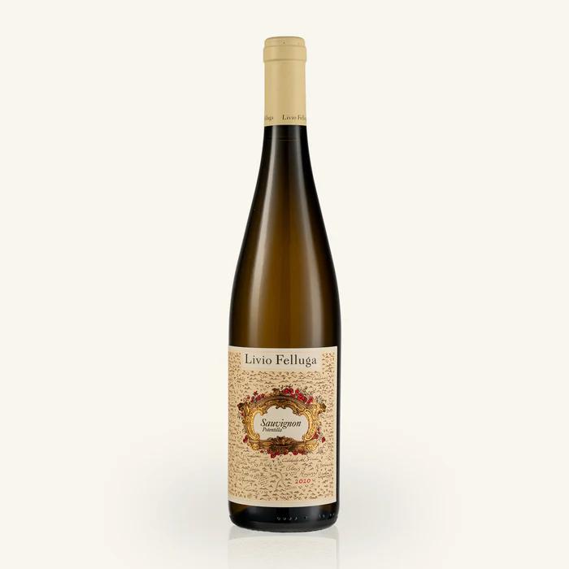
Livio Felluga "Potentilla" Sauvignon Blanc
1. Identité
Pays / région : Italie – Friuli Colli Orientali
Cépage : Sauvignon Blanc
Style : Large, profond, gastronomique
2. Profil
Le Potentilla joue dans un registre plus sérieux et plus profond. Livio Felluga est une référence absolue du Frioul, et cette cuvée est un peu pensée comme un cru de Sauvignon. Vieilles vignes issues de sélection massale, élevage plus travaillé, texture plus ample.
C'est une cuvée mono-cépage, mono-parcelle lancée avec le millésime 2018, issue d'une vigne plantée en 1975 sur les collines de Friuli Colli Orientali.
Notes experts : N/a Wine Advocate – N/a Jancis Robinson – 94/100 James Suckling – 93 Peak Wines
3. Dégustation
Couleur : Jaune paille clair avec des reflets verdâtres
Nez : Fleur de sureau, feuilles d'ortie, fleur de prunier, gardénia blanc, pêche blanche, ananas, mangue et crème au citron
Bouche : Élégant et minéral, avec une levure variétale, des fruits mûrs et plus de texture qu'un simple Sauvignon en acier inoxydable
4. Infos techniques
Vinification : Les raisins sont macérés sur peaux quelques heures, puis le vin passe en fûts de chêne avec fermentation malolactique d'un mois.
Classification : Friuli Colli Orientali DOC Sauvignon Blanc
Garde : 10–15 ans
Carafage : 30 minutes, évolution dans le verre recommandée
Température : 10–12°C
Accords mets : volaille à la crème légère, homard, lotte, risotto aux cèpes, turbot, ravioles aux herbes, vieux comté
5. Journal personnel
Date de dégustation : (à compléter)
Occasion : (à compléter)
Avec quoi : (à compléter)
Ressenti global : (à compléter)
Évolution dans le verre : (à compléter)
Note personnelle : (à compléter)
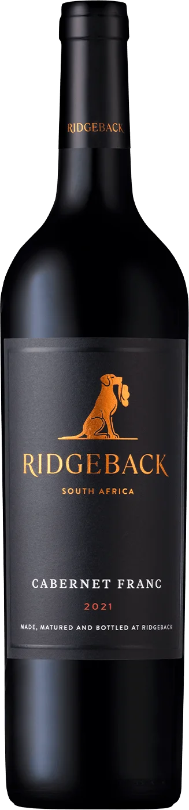
Ridgeback Cabernet Franc 2020
1. Identité
Pays / région : Afrique du Sud – Paarl
Cépage : Cabernet Franc
Style : Élégant, expressif
2. Profil
Cabernet Franc sud-africain élégant et expressif issu de Paarl. Le vin séduit par son équilibre entre fruit rouge mûr, fraîcheur naturelle et notes épicées raffinées.
Accessible dès aujourd'hui après aération, il possède néanmoins un potentiel d'évolution intéressant. Un rouge sincère, précis et gastronomique.
Notes experts : N/a Wine Advocate – N/a Jancis Robinson – 94/100 James Suckling – N/a Peak Wines
3. Dégustation
Couleur : Rubis, rouge profond
Nez : Arômes de fruits rouges mûrs (cerise, baies), complétés par des touches épicées
Bouche : Corps présent, tanins modérés, bon équilibre entre fruit et acidité
4. Infos techniques
Vinification : Maturation en barriques, mélange de fûts de différents âges
Classification : (à compléter)
Garde : 3–7 ans
Carafage : 1h minimum
Température : 16–18°C
Accords mets : viandes grillées, gibiers, plats corsés, fromages à pâte dure
5. Journal personnel
Date de dégustation : 25 décembre 2025
Occasion : Repas de Noël
Avec quoi : Filet de canard aux fruits rouges
Ressenti global : Bonne expérience, fort fruité et frais, très expressif au niveau du nez. Le côté épicé ressort vraiment bien
Évolution dans le verre : 30 minutes de carafage et évolution dans le verre
Note personnelle : 1ère bouteille déjà agréable. Pas encore à son sommet. Attendre fin 2027 pour apogée. Carafer 1h minimum.
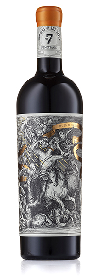
Orpheus & Raven n°7 Pinotage 2022
1. Identité
Pays / région : Afrique du Sud – Simonsberg, Bottelary Hills, Durbanville
Cépage : Pinotage
Style : Nerveux, festif
2. Profil
Pinotage haut de gamme au style moderne, intense et sophistiqué. Élevé longuement en barriques françaises et américaines, il développe un profil profond mêlant fruits noirs mûrs, violette, cacao, épices douces et nuances toastées.
Encore jeune, le vin gagne fortement à être carafé et devrait évoluer avec élégance au fil des années.
Notes experts : N/a Wine Advocate – N/a Jancis Robinson – 91/100 James Suckling – N/a Peak Wines
3. Dégustation
Couleur : (à compléter)
Nez : Baies (blueberry, framboise, mulberry), touches florales (violette, lavande), nuances de chocolat noir, amande grillée, pointe de bois toasté
Bouche : Entrée ronde, structure tannique élégante, bonne acidité, finale juvénile mais prometteuse
4. Infos techniques
Vinification : 18 mois en barriques (1er, 2e, 3e remplissage ; 50% de fûts neufs)
Classification : (à compléter)
Garde : 10–15 ans
Carafage : 1h, évolution dans le verre recommandée
Température : 16–18°C
Accords mets : Viandes rouges, barbecue, côtes d'agneau, plats fumés
5. Journal personnel
Date de dégustation : (à compléter)
Occasion : (à compléter)
Avec quoi : (à compléter)
Ressenti global : (à compléter)
Évolution dans le verre : (à compléter)
Note personnelle : (à compléter)
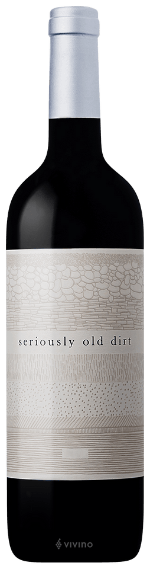
Vilafonté Seriously Old Dirt 2020
1. Identité
Pays / région : Afrique du Sud – Western Cape
Cépage : 86% Cabernet Sauvignon, 8% Merlot, 4% Malbec, 2% Cabernet Franc
Style : Élégant, grand Bordeaux
2. Profil
Assemblage bordelais premium provenant des célèbres sols anciens du Western Cape sud-africain. Le vin allie puissance maîtrisée, précision et profondeur avec des arômes de mûre, prune noire, tabac, cacao et épices nobles.
Encore dans sa jeunesse, il devrait gagner en complexité et en texture au fil du temps. Un vin ambitieux et élégant, idéal pour les grandes occasions.
Notes experts : N/a Wine Advocate – N/a Jancis Robinson – 91/100 James Suckling – N/a Peak Wines
3. Dégustation
Couleur : (à compléter)
Nez : Cerise noire, prune, épices de boulangerie, vanille, tabac, noisette, touche de réglisse ou de cacao
Bouche : Vin corsé, tanins présents mais mûrs, acidité soutenant la structure, belle longévité
4. Infos techniques
Vinification : (à compléter)
Classification : (à compléter)
Garde : 10–15 ans
Carafage : 2–3h, évolution dans le verre recommandée
Température : 16–18°C
Accords mets : Filet de bœuf Wellington, carré d'agneau rôti au thym, civet de cerf, purée truffée
5. Journal personnel
Date de dégustation : (à compléter)
Occasion : (à compléter)
Avec quoi : (à compléter)
Ressenti global : (à compléter)
Évolution dans le verre : (à compléter)
Note personnelle : (à compléter)
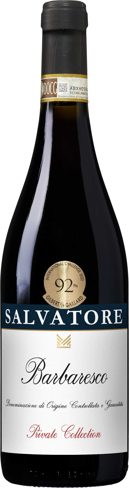
Salvatore M Barbaresco 2021
1. Identité
Pays / région : Piémont
Cépage : Nebbiolo
Style : Structuré, floral, gastronomique
2. Profil
Le Barbaresco 2021 de Salvatore M. est typiquement dans le style classique du Piémont : du nebbiolo assez pur, structuré mais élégant, avec des tanins présents et une belle fraîcheur. C'est un millésime réputé très réussi dans les Langhe.
C'est un vin qui gagnera à vieillir en cave quelques années.
Notes experts : N/a Wine Advocate – N/a Jancis Robinson – N/a James Suckling – N/a Peak Wines
3. Dégustation
Couleur : Rouge profond
Nez : Fleurs puis fruits rouges. Arômes tertiaires avec le temps
Bouche : Tanins fermes, un peu asséchant mais fraîcheur et longueur
4. Infos techniques
Vinification : (à compléter)
Classification : Barbaresco DOCG
Garde : 10–15 ans
Carafage : 2h+, évolution dans le verre recommandée
Température : 16–18°C
Accords mets : Viande rouge, plats italiens typiques (ragù), volaille noble, plats piémontaises et truffes
5. Journal personnel
Date de dégustation : 28 décembre 2025
Occasion : Repas de fin d'année
Avec quoi : Cuisse de pintade, jus court et champignons
Ressenti global : Vin clairement trop jeune, quelques années de vieillissement en cave feront du bien
Évolution dans le verre : Clairement une évolution dans le verre mais limitée
Note personnelle : Ouvrir une 2e bouteille en 2028 pas avant
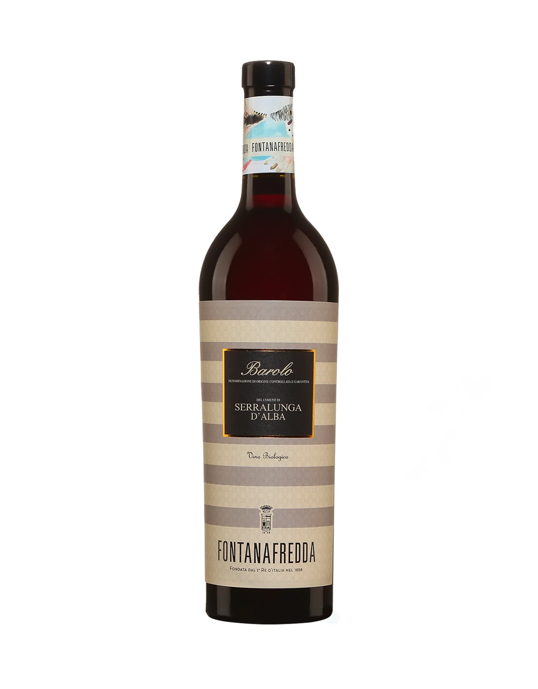
Fontanafredda Barolo Serralunga d'Alba 2019
1. Identité
Pays / région : Italie – Piémont
Cépage : Nebbiolo
Style : Puissant, raffiné, gastronomique
2. Profil
Ce vin est issu de la commune de Serralunga connue pour ses vins de garde.
C'est un vin qui allie élégance, puissance et potentiel de garde – parfait pour un moment célébratoire.
Notes experts : N/a Wine Advocate – N/a Jancis Robinson – 92/100 James Suckling – N/a Peak Wines
3. Dégustation
Couleur : (à compléter)
Nez : Très expressif, arômes de rose fanée, épices, vanille, sous-bois, cerise, réglisse et cacao
Bouche : Sec, étonnamment velouté et harmonieux. Bonne structure tannique, acidité équilibrée, finale persistante et élégante
4. Infos techniques
Vinification : (à compléter)
Classification : (à compléter)
Garde : 10–15 ans
Carafage : 2h+, évolution dans le verre recommandée
Température : 18–20°C
Accords mets : Viandes rouges grillées ou braisées, gibier, sauces riches, fromages puissants
5. Journal personnel
Date de dégustation : (à compléter)
Occasion : (à compléter)
Avec quoi : (à compléter)
Ressenti global : (à compléter)
Évolution dans le verre : (à compléter)
Note personnelle : (à compléter)
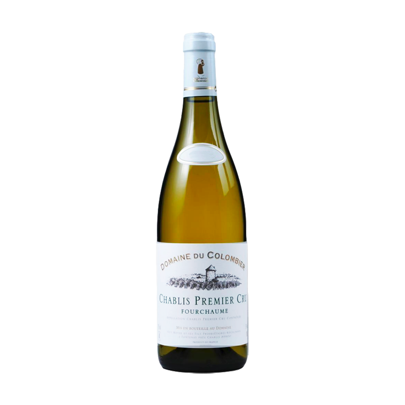
Domaine du Colombier Chablis 1er Cru "Fourchaume" 2022
1. Identité
Pays / région : France – Chablis, Bourgogne
Cépage : Chardonnay
Style : Minéral, fruité, tendu
2. Profil
Le domaine est situé à 4 km de Chablis, dans la commune de Fontenay-Près-Chablis. Fourchaume est l'un des premiers crus les plus réputés de Chablis, avec une exposition favorable au sud et des sols calcaires de haute qualité.
Une exposition favorable et des sols calcaires y créent un vin distinctif, avec des saveurs rondes de citron, pêche blanche et pamplemousse.
Notes experts : N/a Wine Advocate – N/a Jancis Robinson – 92/100 James Suckling – N/a Peak Wines
3. Dégustation
Couleur : Jaune caractéristique aux reflets subtils blanc-vert, limpide et vive
Nez : Généreux, presque tropical, fruits mûrs et croquants, citron et pamplemousse
Bouche : Sec, avec un soupçon de « pierre à feu » et une très bonne longueur. Minéralité fraîche, signature classique du Chablis
4. Infos techniques
Vinification : Méthodes traditionnelles bourguignonnes sans bois (inox), ce qui préserve la pureté et la minéralité
Classification : Chablis 1er Cru AOC
Garde : 6–8 ans
Carafage : Non
Température : 10–12°C
Accords mets : Noix de Saint-Jacques, poissons en sauce, viandes blanches, huîtres, fruits de mer, fromage de chèvre frais
5. Journal personnel
Date de dégustation : (à compléter)
Occasion : (à compléter)
Avec quoi : (à compléter)
Ressenti global : (à compléter)
Évolution dans le verre : (à compléter)
Note personnelle : (à compléter)
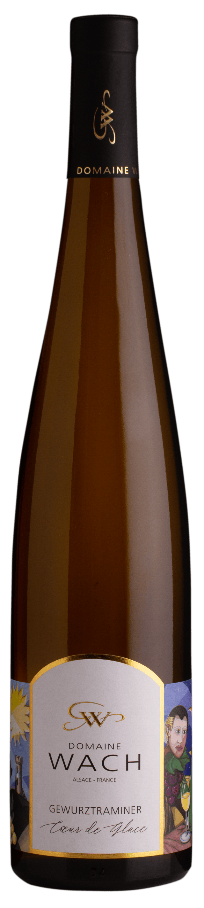
Domaine Wach Gewurtzaminer "Coeur de Glace"
1. Identité
Pays / région : France – Alsace
Cépage : Gewurtzaminer
Style : élégant, frais
2. Profil
La cuvée Cœur de Glace fait partie des « vins rares » du domaine, disponibles en quantités très limitées.
Le concept : “réalisée dans l’esprit d’un vin de glace”. Autrement dit, une vendange avec raisins concentrés par gelée ou forte altération (semblable à un vin de glace)..
Notes experts : N/a Wine Advocate – N/a Jancis Robinson – N/a James Suckling – N/a Peak Wines
3. Dégustation
Couleur : Blanc jaunâtre
Nez : Très expressif : Litchi, rose, fruits de la passion, mangue mûre Notes miellées, parfois un peu d’épices douces et une touche citronnée qui allège l’ensemble À l’ouverture, il peut être un peu discret : n’hésite pas à le laisser s’aérer 10-15 min dans le verre.
Bouche : Texture veloutée et ample Bel équilibre entre sucrosité et fraîcheur acide (typique des bons moelleux d’Alsace) Finale longue, légèrement épicée, sur les fruits exotiques confits
4. Infos techniques
Vinification : A Complèter
Classification : A compléter
Garde : 4–6 ans
Carafage : Non, mais laisser respirer dans le verre
Température : 10–12°C
Accords mets : foie gras (classique des vins moelleux d’Alsace) Des desserts aux fruits exotiques, ou à l’abricot-poire. Le site du domaine suggère tarte à la poire ou à l’abricot et fromage à pate dure.
5. Journal personnel
Date de dégustation : (à compléter)
Occasion : (à compléter)
Avec quoi : (à compléter)
Ressenti global : (à compléter)
Évolution dans le verre : (à compléter)
Note personnelle : (à compléter)
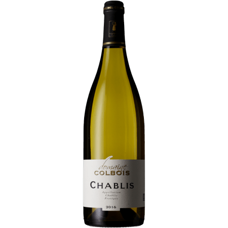
Domaine Colbois Chablis
1. Identité
Pays / région : France – Chablis, Bourgogne
Cépage : Chardonnay
Style : Minéral, Pierre à fusil, aromatique
2. Profil
100 % Chardonnay, vinifié en cuve inox avec élevage sur lies fines, ce qui lui donne de la fraîcheur et cette minéralité caractéristique du Chablis. Robe paille, nez d’agrumes et notes minérales, joli équilibre et longueur sympa.
Domaine Colbois, c’est un producteur pas hyper « célèbre » comme Raveneau ou Dauvissat, mais un vignoble respecté localement, produisant un Chablis franc, minéral, bien fait et qui correspond bien à l’idée que l’on se fait du style classique.
Notes experts : N/a Wine Advocate – N/a Jancis Robinson – N/a James Suckling – N/a Peak Wines
3. Dégustation
Couleur : A compléter
Nez : Pomme verte, zeste, citron, pamplemousse, pierre humide
Bouche : Attaque fraiche, vive, acidité bien tendue, finale saline
4. Infos techniques
Vinification : Ils jouent plutôt la carte de la vinification moderne + tradition : cuves inox thermo-régulées, élevage sur lies fines, et parfois un petit passage en fût pour certaines cuvées..
Classification : Chablis AOC
Garde : 2–5 ans
Carafage : Non
Température : 10–11°C
Accords mets : fruits de mer et crustacés, fromage frais, tartare de saumon
5. Journal personnel
Date de dégustation : Automne 2025
Occasion : Gouter une 1ére bouteille de ce Chablis
Avec quoi : Saumon fumé
Ressenti global : Très agréable
Évolution dans le verre : (à compléter)
Note personnelle : 1ére bouteille ouverte
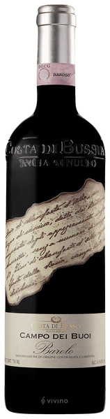
Costa di Bussia - Campo di Bui 2016
1. Identité
Pays / région : Italie – Piémont
Cépage : Nebbolio
Style : Large, profond, gastronomique
2. Profil
Le Costa di Bussia - Tenuta Arnulfo, domaine fondé en 1874 par Luigi Arnulfo, une légende du Barolo impliqué dans les premières exportations vers les États-Unis. La propriété appartient aujourd'hui à la famille Sartirano, dont les racines piémontaises remontent à la fin des années 1800, et comprend seulement 11 acres de vignes de nebbiolo. .
Vigna Campo dei Buoi, située dans la zone de Bussia à Monforte d'Alba. Le nom "Campo dei Buoi" (champ des bœufs) est un nom historique transmis par les habitants locaux et mentionné dans le document d'achat du domaine signé par Luigi Arnulfo. .
Notes experts : N/a Wine Advocate – N/a Jancis Robinson – N/a James Suckling – N/a Peak Wines
3. Dégustation
Couleur : Rouge profond
Nez : Des arômes complexes de fruits rouges confits (cerise, griotte), de roses fanées, de violette, avec des notes tertiaires de cuir, de truffe, de tabac et d'épices douces. Le terroir de Bussia apporte souvent une élégance particulière.
Bouche : Une structure tannique encore présente mais qui commence à se fondre, une belle acidité caractéristique du nebbiolo qui apporte de la fraîcheur, des saveurs de fruits mûrs, de réglisse, et une longue finale persistante avec peut-être des notes de goudron et de terre humide.
4. Infos techniques
Vinification : Élevage de 30 mois en grands fûts de chêne slavon de 5000 litres, suivi d'un affinage en bouteill.
Classification : Barolo DOC
Garde : 10–15 ans
Carafage : 2h+, évolution dans le verre recommandée
Température : 16–18°C
Accords mets : A complèter
5. Journal personnel
Date de dégustation : (à compléter)
Occasion : (à compléter)
Avec quoi : (à compléter)
Ressenti global : (à compléter)
Évolution dans le verre : (à compléter)
Note personnelle : (à compléter)
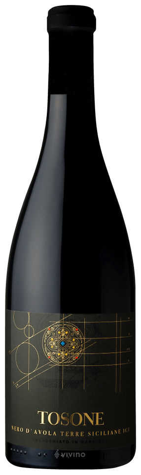
Tosone Nero d'Avola 2021
1. Identité
Pays / région : Italie – Sicile
Cépage : Nero d'Avola
Style : Solaire, puissant, généreux
2. Profil
Ce 100% Nero d'Avola, cultivé principalement sur les collines de la Sicile occidentale (autour de Salemi et Santa Ninfa, entre 300 et 500 mètres d'altitude), passe généralement environ 8 mois en barriques..
Le style moderne comme ce Tosone cherche à dompter la fougue du cépage pour créer un vin immédiat, soyeux et extrêmement flatteur, a contrario le style traditionnel cherche à préserver l'identité pure du cépage et la fraîcheur du climat méditerranéen, sans le maquillage du bois. Le style moderne donne des vins "gourmands" qui se suffisent presque à eux-mêmes (parfaits pour les amateurs de grands crus classés de Bordeaux modernes ou de vins du Nouveau Monde), tandis que le style traditionnel offre des vins plus digestes, taillés pour la table et très fidèles à l'identité historique de la Sicile.
Notes experts : N/a Wine Advocate – N/a Jancis Robinson – N/a James Suckling – N/a Peak Wines
3. Dégustation
Couleur : Rouge profond
Nez : C'est une explosion de fruits très mûrs. On y trouve des notes puissantes de confiture de cerise noire, de mûre, de pruneau, le tout enveloppé par des arômes boisés et doux apportés par l'élevage (vanille, chocolat noir, cacao et une touche de réglisse).
Bouche : C’est un vin opulent, charnu et très dense. Les tanins sont extrêmement souples et fondus. Il se distingue par une attaque ronde, presque suave (une légère sucrosité perçue qui adoucit l'ensemble), avec une acidité discrète. Il titre généralement autour de 14,5% vol., mais l'alcool est enveloppé par la richesse du fruit.
4. Infos techniques
Vinification : 8 mois en barrique
Classification : Sicilia DOC
Garde : 3–7 ans
Carafage : 1h minimum
Température : 16–18°C
Accords mets : viandes grillées, Pâtes et sauces riches, fromages affiné et corsé
5. Journal personnel
Date de dégustation : Fin d'année 2025
Occasion : Bon repas
Avec quoi : A complèter
Ressenti global : A complèter
Évolution dans le verre : 1h et
Note personnelle : 1ère bouteille déjà agréable.
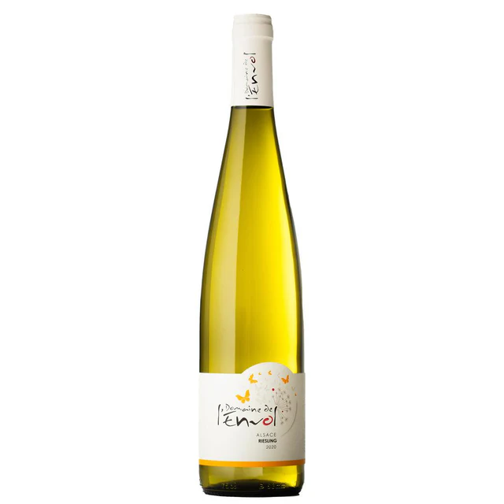
Domaine de l'Envol Pinot gris 2024
1. Identité
Pays / région : France - Alsace
Cépage : Pinot gris
Style : Aromatique, frais
2. Profil
Pinot gris sec mais pas lourd.
Encore jeune, il posséde pour le momennt un profil aromatique. Avec le temps, le coté granit pourra apporter un peu de tension minérale.
Notes experts : N/a Wine Advocate – N/a Jancis Robinson – N/a James Suckling – N/a Peak Wines
3. Dégustation
Couleur : (à compléter)
Nez : A Complèter
Bouche : A complèter
4. Infos techniques
Vinification : a complèter
Classification : (à compléter)
Garde : 6–10 ans
Carafage : non
Température : 9–12°C
Accords mets : Plats crémeux, champignons, plats épicés
5. Journal personnel
Date de dégustation : (à compléter)
Occasion : (à compléter)
Avec quoi : (à compléter)
Ressenti global : (à compléter)
Évolution dans le verre : (à compléter)
Note personnelle : (à compléter)
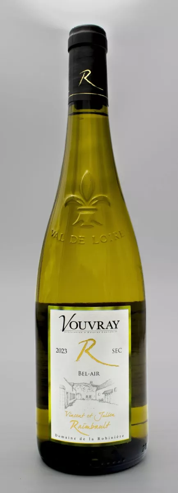
Saint Véran par Stéphanie Saumaize
1. Identité
Pays / région : France – Sud Maconnais Bourgogne
Cépage : Chardonnay
Style : Soyeux, pur, équilibré
2. Profil
Produit dans le sud de la Bourgogne (Mâconnais) par une vigneronne de grand talent, cette cuvée est un 100% Chardonnay qui allie la rondeur bourguignonne à une superbe tension..
Stéphanie Saumaize signe ici un Saint-Véran d'une grande élégance. Le nez s'ouvre sur des notes de fleurs blanches, d'amande fraîche et une touche de fruits jaunes (pêche). La bouche se distingue par sa texture : c'est charnu et enveloppant, mais immédiatement soutenu par une belle fraîcheur calcaire qui évite toute lourdeur. La finale est nette, sur des notes subtilement briochées et une fine minéralisante..
Notes experts : N/a Wine Advocate – N/a Jancis Robinson – N/a James Suckling – N/a Peak Wines
3. Dégustation
Couleur : (à compléter)
Nez : A complèter
Bouche : A Complèter
4. Infos techniques
Vinification : (à compléter)
Classification : (à compléter)
Garde : 8–10 ans
Carafage : non
Température : 10–12°C
Accords mets : Poisson
5. Journal personnel
Date de dégustation : (à compléter)
Occasion : (à compléter)
Avec quoi : (à compléter)
Ressenti global : (à compléter)
Évolution dans le verre : (à compléter)
Note personnelle : (à compléter)
Domaine de la Robinière - Raimbault "Bel-air" Vouvray 2023
1. Identité
Pays / région : Loire
Cépage : Chenin Blanc
Style : Fraicheur, minéralité, fruité
2. Profil
Ce vin est une expression classique et vibrante du cépage Chenin Blanc, né sur les sols calcaires (tuffeau) et de silex de la Touraine..
Ce millésime 2023 offre un profil très pur, axé sur les fruits à chair blanche (poire, pomme granny) et des notes de verveine. En bouche, c'est l'équilibre typique du Vouvray sec : une attaque droite, une tension minérale saline très salivante due au terroir de silex, et une finale fine qui s'étire sur les agrumes frais. Un blanc d'une grande fraîcheur, parfait pour réveiller les papilles..
Notes experts : N/a Wine Advocate – N/a Jancis Robinson – N/a James Suckling – N/a Peak Wines
3. Dégustation
Couleur : A complèter
Nez : A complèter
Bouche : A compléter
4. Infos techniques
Vinification : (à compléter)
Classification : Vouvray AOC
Garde : 5–10 ans
Carafage : non
Température : 10–12°C
Accords mets : a complèter
5. Journal personnel
Date de dégustation : a compléter
Occasion : 1ére bouteille
Avec quoi : C
Ressenti global : Vin
Évolution dans le verre : a voir
Note personnelle : Ouvrir une 2e bouteille
Aucun vin ne correspond à votre recherche.